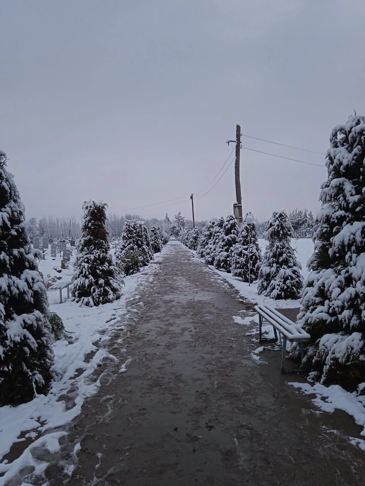

📍
Manzil
Chinobod, Baliqchi tumani
🕰️
Ziyorat vaqti
Har kuni, kunduzi
🤲
Mas'ul shaxs
Mahalla fuqarolar yig'ini
Tarixi
Chinobod dafn etish joyi Qoradaryo bo'yida, Chinobod aholi punktining shimoliy chekkasida joylashgan. Bu yerda Chinobod ahlining yaqinlari abadiy qo'nim topgan.
Qabristonning paydo bo'lish tarixi, nomining kelib chiqishi va u bilan bog'liq xotiralar keksa avlod vakillaridan to'planmoqda va tez orada shu yerga qo'shiladi.
- Tashkil topishi Ma'lumot to'planmoqda
- Devor bilan o'ralishi Ma'lumot to'planmoqda
- Bugun Ma'lumot to'planmoqda
Ziyorat odobi
- 1Kirishda qabr ahliga salom bering va ular haqqiga duo qiling
- 2Qabrlar ustidan yurmang, ularning ustiga o'tirmang
- 3Ovozni baland qilmang, sukunat va hurmatni saqlang
- 4Tozalikka rioya qiling, chiqindi qoldirmang
- 5Qabristondagi daraxt va o'simliklarni sindirmang
- 6Odob doirasidagi, ozoda kiyimda keling
السَّلَامُ عَلَيْكُمْ أَهْلَ الدِّيَارِ مِنَ الْمُؤْمِنِينَ وَالْمُسْلِمِينَ
«Assalomu alaykum, ey bu diyorning mo'min va musulmon ahli»
Rasmlar



Joylashuv
Koordinata: 40.888335, 71.968995
Qanday borish mumkin
- Baliqchi tuman markazidan Chinobod tomon yo'lga chiqing
- Chinobod aholi punktiga kirgach, Qoradaryo tomon (shimolga) yuring
- Qabriston aholi punktining shimoliy chekkasida, devor bilan o'ralgan maydonda joylashgan
Aloqa
- Mas'ul
- Mahalla fuqarolar yig'ini
- Telefon
- +998 __ ___ __ __
- Manzil
- Chinobod, Baliqchi tumani, Andijon viloyati